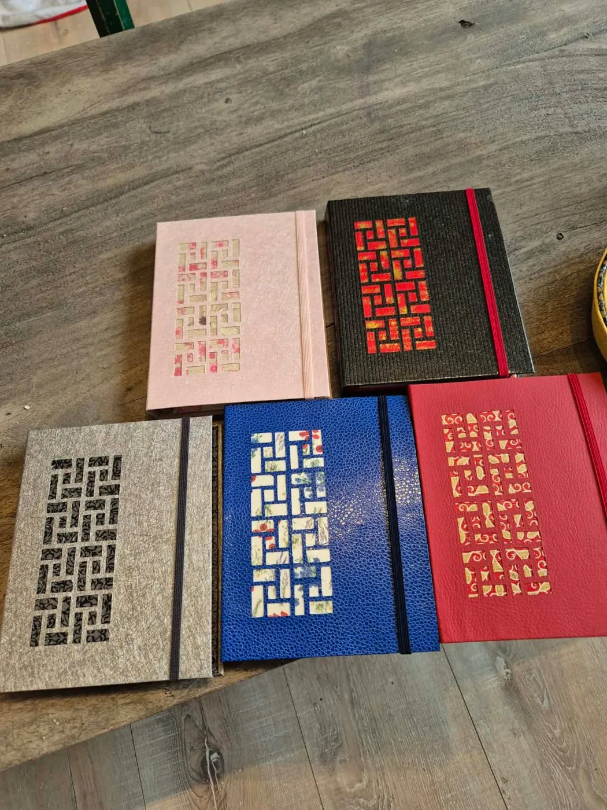
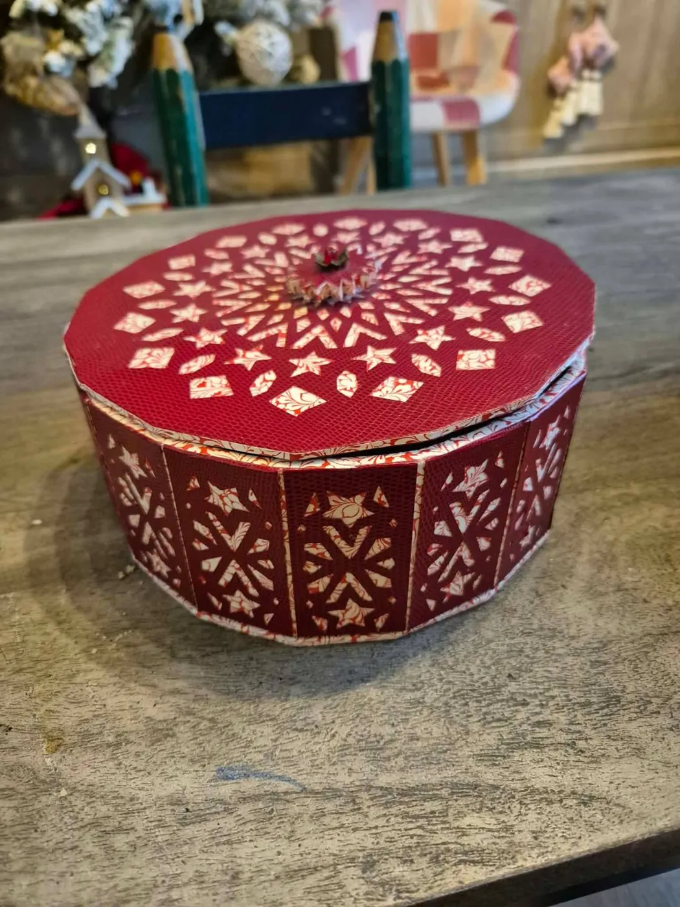
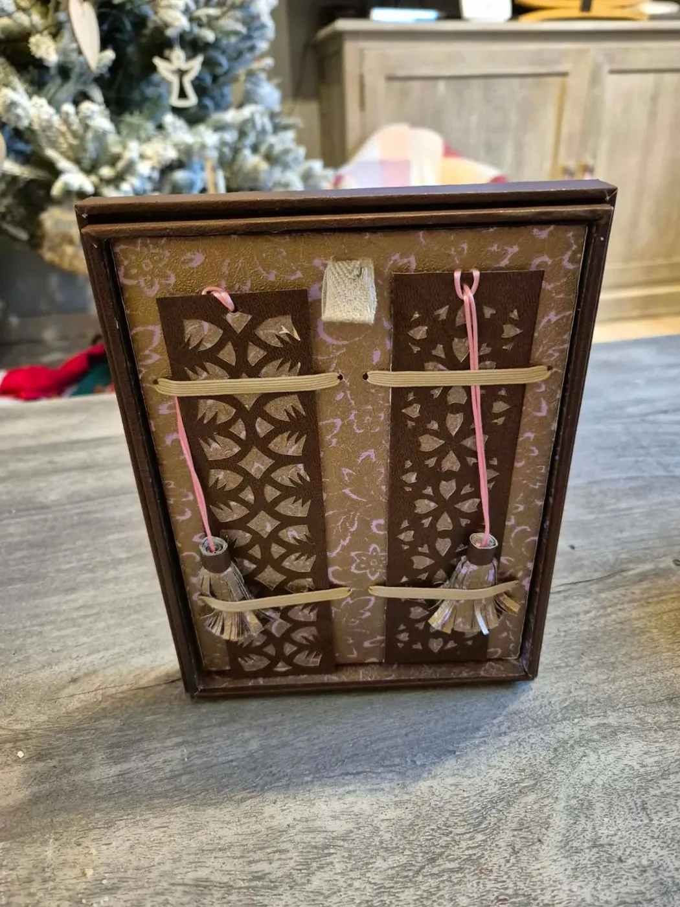
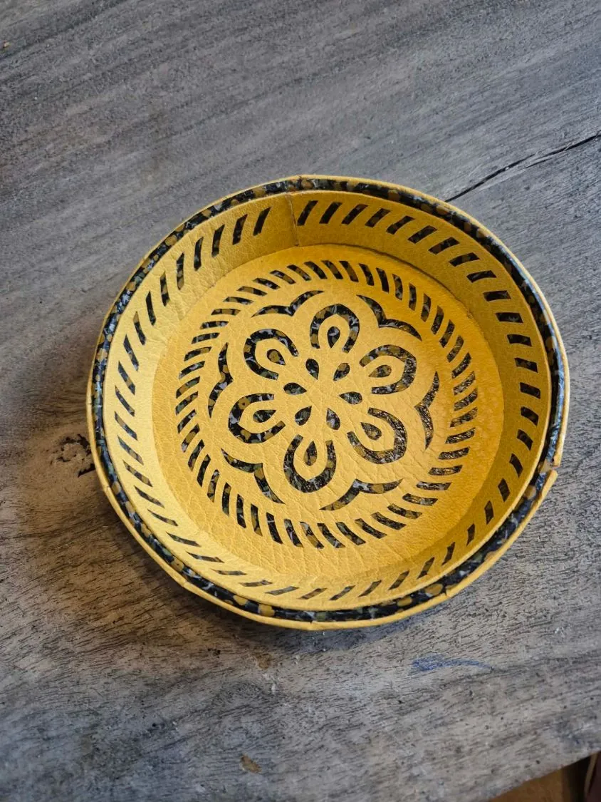
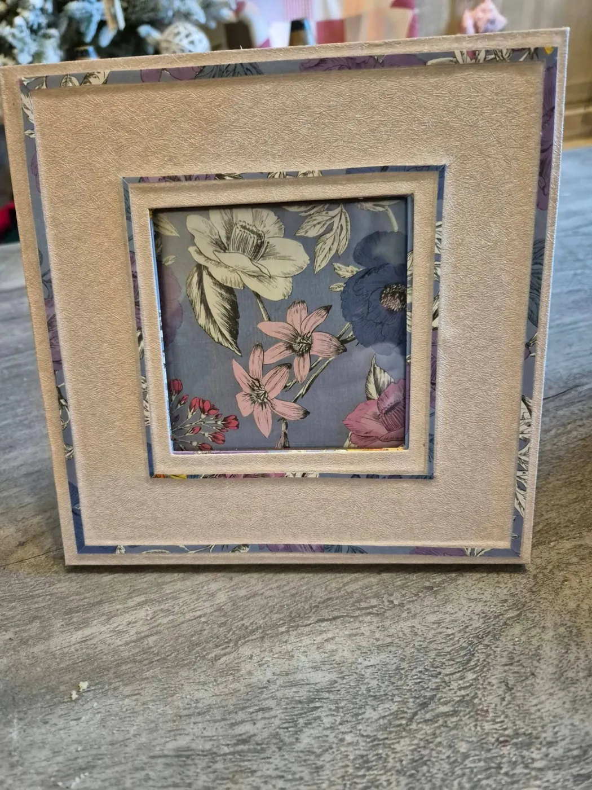

Les créations
Boîtes, carnets et marque-pages faits main
Coffrets, boîtes à bijoux, carnets, vide-poches et cadres : chaque pièce est montée, habillée et découpée à la main. Des objets uniques, à garder ou à offrir.
Écrire à LouLes créations
Pièces uniques, faites une à une
Chaque boîte, chaque carnet est assemblé et découpé à la main : aucune pièce n’est tout à fait la même que la précédente.

Carnets à motifs
Couverture rigide découpée, papier glissé dessous, fermeture élastique.

Boîte coulissante
Noire et cuivre, fleurs découpées et tiroir garni.

Boîte étoilée
Douze pans, couvercle et côtés découpés d’étoiles.

Coffret marque-pages
Deux marque-pages dentelle avec leurs pompons, en écrin.

Boîte à bijoux
Rouge et or, bouton perle, papier à volutes dorées.

Vide-poche rosace
Jaune soleil, rosace découpée sur papier moucheté.

Cadre fleuri
Double biseau, liseré de papier fleuri.
Questions fréquentes
Les créations sont-elles des pièces uniques ?
Oui : chaque boîte et chaque carnet est assemblé et découpé à la main. Deux pièces d’un même modèle ne sont jamais tout à fait identiques.
Où peut-on acheter les créations ?
En dépôt dans des boutiques d’artisans à Cambrai et à Paris, sur les marchés de Noël, ou directement auprès de Lou en lui écrivant.
Comment entretenir une boîte en cartonnage ?
Gardez-la au sec et à l’abri du soleil direct. Un chiffon doux et sec suffit pour la dépoussiérer.